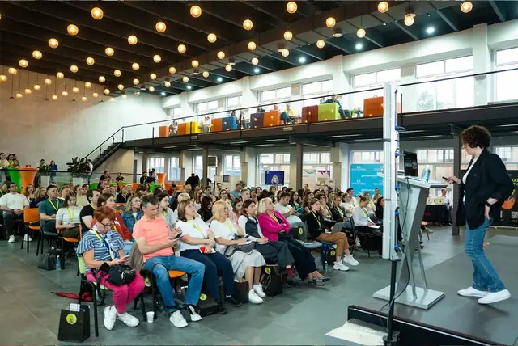
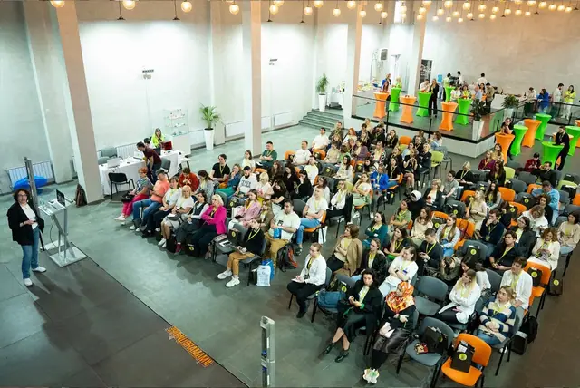

Зал Hertz


Megapolis Hall


Зал Tesla


Рябов Лофт


Зал Royal


Зал LOFT


People Loft


Зал White


Лофт «Кандинский»


Exit Loft


Зал Ampere


Studio Hall, зал 17


Skynia Hall
Лофты на день рождения: аренда, гости, питание
| Площадка | Гостей | Аренда по прайсу | Питание | Где |
|---|---|---|---|---|
| Зал HertzGOELRO | до 400 | от 400 000 ₽ | банкет от 8 000 ₽ | м. Электрозаводская |
| Megapolis HallАртикон | до 150 | от 150 000 ₽ | можно свой кейтеринг | м. Нагатинская |
| Зал TeslaGOELRO | до 100 | по запросу | меню площадки | ул. Большая Почтовая |
| Рябов ЛофтТульская | до 150 | по запросу | меню площадки | м. Тульская |
| Зал RoyalAG Loft | до 150 | по запросу | меню площадки | м. Курская |
| Зал LOFTLa Riva Hall | до 150 | от 150 000 ₽ | банкет от 7 500 ₽ | ул. Автозаводская |
| People LoftЭнтузиастов | до 150 | от 7 000 ₽/час, от 3 ч | банкет от 4 000 ₽ | м. Авиамоторная |
| Зал WhiteAG Loft | до 70 | от 8 000 ₽/час | меню площадки | м. Нагатинская |
| Лофт «Кандинский»Casa Picassa | до 120 | от 10 500 ₽/час | меню площадки | м. Бауманская |
| Exit LoftДубровка | до 120 | от 5 500 ₽/час | можно свой кейтеринг | м. Дубровка |
| Зал AmpereGOELRO | до 100 | по запросу | меню площадки | ул. Большая Почтовая |
| Studio Hall, зал 17Studio Hall | по запросу | от 90 000 ₽ | меню площадки | Ленинский пр. |
| Skynia HallВолгоградский проспект | до 350 | по запросу | меню площадки | м. Волгоградский проспект |
Аренда — базовый прайс с сайта площадки за минимальное время (проверено 25 октября 2026 года), «по запросу» — площадка не публикует цену, назовём её после запроса на вашу дату. В смете мероприятия аренду лофта закладываем от 100 000 ₽ за день: к базовым часам почти всегда добавляются технические часы на заезд подрядчиков, монтаж декора и техники. Окончательную сумму подтверждает менеджер площадки.
Сколько стоит день рождения в лофте
Смета складывается из аренды, питания, напитков, техники и программы. В смете мероприятия аренду лофта закладываем от 100 000 ₽ за день: к базовым часам почти всегда добавляются технические часы на заезд подрядчиков, монтаж декора и техники. Питание — по меню площадки или внешний кейтеринг, если лофт его разрешает; напитки — бар площадки или свой алкоголь по правилам площадки.
Посчитать предварительно можно в калькуляторе на странице каждого лофта, а подробный разбор — в гайде «Сколько стоит аренда лофта в Москве». Подбор лофта бесплатный.